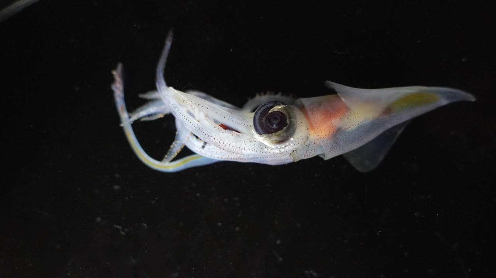
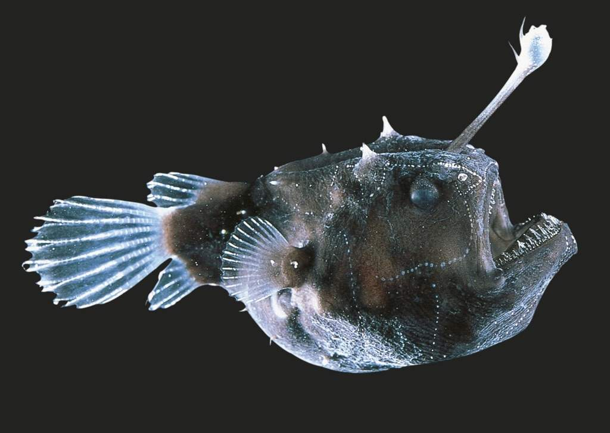

The Abyssal Zone
Then their is the last zone of open water the Abyssal Zone (or Abyssopelagic) which extends down to the ocean floor (around 20,000 feet or 6,000 meters) after this only trenches continue down. Here life faces even more challenges with no light cold temperatures and very extream pressure. Also for much of the zone food is gained only from what falls down from higher parts of the ocean while at the bottom their are large amounts of decomposer organisms.
 Pressure this far down is extreamly high to the point where any life not evolved to live in these conditonas would be immediately crushed. Click on this text with and without the shift key.